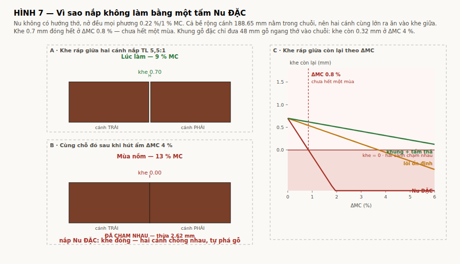
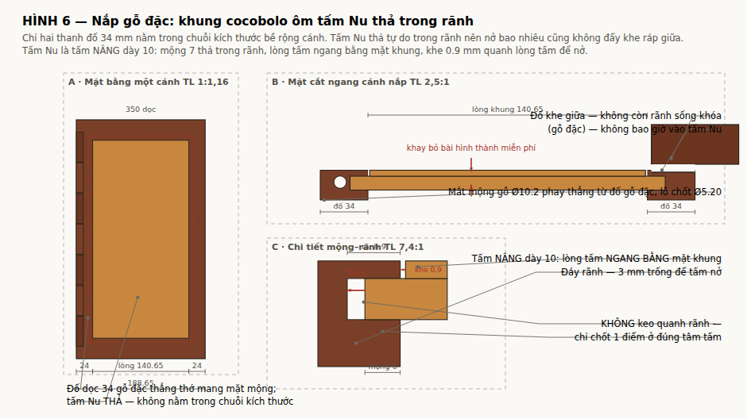

docs/DONG-HOC-BAN-LE.md. Bản lề vẫn là mắt mộng gỗ, không kim loại. Kết luận khung + tấm thả vẫn đúng, nhưng nay đứng trên hai chân chắc hơn: khe ráp giữa và đố dọc bản lề. Mục dưới viết lại theo tools/lid_solid_calc.py.build/nap-go-dac.pdf. Hình: figs/fig6-khung-tam-tha, figs/fig7-khe-rap-giua. Tính toán: tools/lid_solid_calc.py.Nắp gỗ đặc làm được — nhưng không phải bằng một tấm Nu nguyên khối.
Nắp gập đôi: hai cánh 188.65 mm, khe ráp giữa 0.7 mm. Cả hai cánh cùng hút ẩm và cùng lớn ra, mỗi bên ăn vào khe một nửa. Nu không có hướng thớ nên nở đều mọi phương và cả bề rộng cánh nằm trong chuỗi kích thước; ở ΔMC 1,85 % khe đã đóng hoàn toàn — chưa hết một mùa. Hai cánh chống nhau rồi tự phá gỗ hoặc đẩy bung bản lề.
Lời giải: khung gỗ đặc thẳng thớ ôm tấm Nu thả trong rãnh — đúng thứ trong ảnh mẫu. Khung chỉ đưa 48 mm gỗ ngang bề rộng (hai đố dọc 24, xẻ xuyên tâm) vào chuỗi bề rộng; tấm Nu thả tự do trong rãnh nên nở bao nhiêu cũng không đẩy khe.
| Cấu tạo cánh nắp | Hệ số | 2 % | 3 % | 4 % | 5 % | khe đóng ở ΔMC |
|---|---|---|---|---|---|---|
| Tấm Nu ĐẶC | 0,22 % | -0.96 | -1.79 | -2.62 | -3.45 | 0.84 % |
| Lõi ổn định + veneer | 0,05 % | 0.32 | 0.13 | -0.05 | -0.24 | 3.71 % |
| Khung gỗ đặc + tấm thả, đố dọc 34 tiếp tuyến | 0,16 % | 1,06 | 0,85 | 0,63 | 0,41 | 6,89 % |
| Khung gỗ đặc + tấm thả, đố dọc 24 XUYÊN TÂM | 0.10 % | 0.51 | 0.41 | 0.32 | 0.22 | 7.29 % |
Xưởng làm ở 9 % MC, mùa nồm miền Bắc/Nam lên 13 % → ΔMC = 4 %.

Không tính được bằng bảng, nhưng chặn thiết kế:
⇒ Đố dọc bản lề bắt buộc là gỗ đặc thẳng thớ. Tức là KHUNG + TẤM THẢ.
| Chi tiết | Kích thước | Ghi chú |
|---|---|---|
| Đố dọc cạnh bản lề | 24 × 350 × 15 | cocobolo đặc, xẻ xuyên tâm (P7), thớ dọc 350; mang 3 mắt mộng Ø10.2 và lỗ chốt Ø5.20 |
| Đố dọc cạnh khe giữa | 24 × 350 × 15 | không còn rãnh sống khóa |
| Đố ngang trước/sau | 30 × 120.25 | |
| Lòng khung | 120.25 × 290 | |
| Tấm Nu | 132.25 × 302 × 10 | tấm NÂNG: mộng 7 vào rãnh sâu 9 → thả 3 mm mỗi phía |
| Bậc phay quanh mép TRÊN tấm | sâu 3 × rộng 6.9 | = ăn vào rãnh 6 + khe 0.9 |
| Lòng tấm (phần dâng lên) | 117.25 × 287 | mặt trên ở Z62 — ngang bằng mặt khung |
| Khe quanh lòng tấm | 0.9 ±0.10 mm mỗi phía | chỗ cho gỗ nở; xem bên dưới |
| Khe ráp giữa | 0,6 → 1,5 → 0.7 ±0.10 | không có sống khóa phủ, nên đây là đặc tính nhìn thấy |
Chỉ hai thanh đố nằm trong chuỗi kích thước bề rộng: 188.65 = 24 + 140.65 (THẢ) + 24. Tấm Nu nở vào khoảng trống 3 mm trong rãnh, không đẩy vào khe ráp giữa.
Mộng tấm 7 mm chứ không phải 10: ở mộng 10 thì lip dưới của rãnh ôm tấm chỉ còn 0,23 mm — không phay được. Đó là lỗi tiềm ẩn của bản trước, không phải chuyện giảm cân.
Chỉ chốt hoặc dán tấm ở đúng một điểm giữa tấm. Dán quanh rãnh là tấm nứt.

Yêu cầu: mặt nắp là một mặt phẳng liền, tấm Nu không thụt 3 mm xuống dưới mặt khung như bản trước.
Không thể chỉ nâng tấm lên rồi dán: tấm Nu 132 × 302 nở 0.22 %/1%MC mọi phương (Nu thớ xoắn loạn, không hướng). Dán cứng thì hoặc tấm nứt hoặc mộng khung bung. Nên tấm vẫn phải thả — chỉ đổi hình cắt của nó:
tấm dày 10 = mộng 7 (chạy trong rãnh) + 3 dâng lên bậc phay quanh mép TRÊN: sâu 3 × rộng 7 lòng tấm dâng lên đúng Z62 = mặt khung
Khe 0.9 mm quanh lòng tấm không phải trang trí — nó là chỗ cho tấm nở. Tấm thả giữa nên mỗi phía dịch một nửa tổng biến thiên:
| trường hợp | dịch mỗi phía | khe hẹp nhất | khe rộng nhất |
|---|---|---|---|
| đã ổn định về 11 %, ±2 % — trường hợp thiết kế | 0.66 | 0.24 | 1.56 |
| xấu nhất: cộng dung sai 0.10 và lớp hoàn thiện 0.05 | 0.66 | 0.09 | 1.66 |
| lắp thẳng ở 9 %, +4 % một chiều — P5 cấm | 1.33 | -0.43 | 2.23 |
Khe 0.9 chứ không phải 1,5 như bản trước, và cũng không phải 0,8. Lý do của cả hai:
Bản trước lấy 1,5 để chịu hàng cuối bảng — trường hợp lắp thẳng ở 9 % MC. Nhưng QA-01 P5 đã bắt buộc ổn định mọi phôi về 11 % ±1 trước khi gia công. Thiết kế chống lại một trường hợp mà một phép thử bắt buộc đã cấm là đếm rủi ro hai lần. Bỏ hàng đó thì khe chỉ cần 0.66.
Còn 0,8 thì không sống nổi qua dung sai của chính nó: 0.10 dung sai phay bậc cộng 0.05 lớp hoàn thiện trên hai mép, còn lại 0,-14 mm — bằng không. 0.9 là trị số nhỏ nhất còn để lại 0.09 mm ở trường hợp xấu nhất.
Nếu muốn khe nhỏ hơn 0.9 mm thì chỉ còn một đường: bỏ Nu đặc, dùng veneer Nu trên lõi ổn định (0.05 %/1%MC thay vì 0.22 %). Lúc đó dịch mỗi phía chỉ 0.15 mm — khe 0,3 mm là đủ, hoặc dán cứng luôn. Đổi lại: mặt cắt cạnh tấm không còn là gỗ thật. Suy: tools/lid_solid_calc.py mục 2 và tools/gap_options.py.
Khung dày đều 15; mộng tấm nằm ở z 52…59 nên mặt dưới tấm cao hơn mặt dưới khung 5.0 mm. Lòng lõm 120.25 × 290 đó chính là khay bỏ bài, và khi mở 180° nó nằm ngửa lên đúng cao độ vành thân Z47.
Giải luôn: §3.1 review Rev B (cánh nắp cần lòng lõm) và vấn đề "không phay được lòng ở mép 8 mm".
| Cấu tạo khay | Gỗ | + Quân | TỔNG |
|---|---|---|---|
| Khay cocobolo | 4.65 | 2.43 | 7.08 kg |
| Khay lõi ổn định | 4.02 | 2.43 | 6.45 kg |
Tải thiết kế 70 N (khay cocobolo) / 64 N (khay lõi ổn định). Không còn sống khóa, không còn quai — xem docs/CHOT-REV-C.md.
Đã chốt: khung nắp và thân đều là cocobolo, chỉ tấm nắp là Nu gõ đỏ — đồng màu như ảnh mẫu.
Khung nắp là kết cấu 4 mộng mỗi cánh, 8 mộng cả bộ, vừa giữ tấm Nu vừa mang mắt mộng bản lề. Mà cocobolo là một trong những loại khó dán nhất: chất chiết xuất (quinone) thổi lên bề mặt vừa gia công trong vòng vài phút và chặn kết dính.
| Hạng mục | Yêu cầu bắt buộc |
|---|---|
| Keo | EPOXY, không dùng PVA. PVA trên cocobolo là kiểu hỏng đã biết. |
| Lau dầu | Acetone, lau ngay trước khi ép — trong vòng 15 phút kể từ khi phay xong má mộng |
| Chốt khóa | Chốt gỗ Ø5 xuyên mộng, khoan lệch 0,8 mm (draw-bore). Không phải để chịu tải — mỗi mộng chỉ chịu ~20 N — mà để khung không bung nếu đường keo hỏng sau vài mùa |
| Kiểm tra | Ép thử 1 mộng mẫu, để 7 ngày rồi phá huỷ. Đường phá phải đi qua thớ gỗ, không được đi dọc đường keo |
Nếu xưởng không chạy được quy trình này: chuyển khung sang gõ đỏ (dễ dán hơn nhiều) và chấp nhận lệch màu ở mép nắp.
Cần 2 tấm đã lạng 126,15 × 302 × 9 (bào xuống 7), lạng liên tiếp để book-match. Khối Nu thô tối thiểu ~166 × 342 × 36.
| Ổn định hoá | ngâm nhựa chân không trước khi gia công tinh |
| Mắt / lõi vỏ | trám epoxy trước khi chà tinh |
| Chiều dày | 7 mm — dày hơn thì lip dưới của rãnh không phay được |
| Dán tấm | chỉ chốt 1 điểm ở đúng tâm |
| Hoàn thiện | bít lỗ (grain filler) rồi mới phủ |
Sống khóa 44 × 20, chốt xoay Ø16 và quai da đều đã bỏ cùng với phương án A. Khóa nắp nay là 8 cặp nam châm nối nắp với thân — xem docs/KHOA-NAP.md. Nắp đều 15, không vát. Phủ bì 388.2 × 350 × 62 — thân 378, ống bản lề nhô ra 5.1 mm mỗi bên.
Gõ đỏ = Afzelia xylocarpa, IUCN Endangered. CoP18 (2019) đưa Afzelia spp. quần thể châu Phi vào Phụ lục II CITES. Loài châu Á và quy định Nhóm IIA trong nước là hai chuyện khác nhau và có thể đã thay đổi — phần này viết theo trí nhớ, bắt buộc xác minh với Cơ quan quản lý CITES Việt Nam và Chi cục Kiểm lâm trước khi mua.
Cộng với cocobolo (Dalbergia, Phụ lục II) — hộp này nay có hai loài cần giấy tờ.
Khung nắp cocobolo còn quyết định số hộp gửi được mỗi lô hàng:
| Cấu tạo khay | Dalbergia / hộp | Tối đa mỗi lô (ngưỡng 10 kg) |
|---|---|---|
| Khay cocobolo | 3,90 kg | 2 hộp |
| Khay lõi ổn định | 2,44 kg | 4 hộp |
| # | Thay đổi | Lý do |
|---|---|---|
| 1 | Cánh nắp: tấm liền → khung + tấm thả | Nu đặc đóng khe ráp giữa ở ΔMC 1,85 % |
| 2 | Khe ráp giữa 0,6 → 1,5 → 0.7 ±0.10 | đố dọc 24 xẻ xuyên tâm: chuyển vị hai đố ở ΔMC 5 % còn 0.48 mm |
| 3 | Bỏ nguyên công phay lòng lõm cánh nắp | khung–tấm tự sinh ra khay bỏ bài |
| 4 | Thêm nguyên công ổn định hoá tấm Nu | chống nứt, chống hút hoàn thiện không đều |
| 5 | BOM thêm: 2 tấm Nu, epoxy trám, grain filler | |
| 6 | Hồ sơ CITES: thêm Afzelia | trước chỉ có Dalbergia |
| 7 | Khung nắp cocobolo, không phải gõ đỏ | đồng màu thân như ảnh mẫu; kéo theo quy trình epoxy + draw-bore |
| 8 | Tấm Nu 10 → 7 | ở tấm 10 thì lip dưới của rãnh chỉ còn 0,23 mm |
| 9 | Mắt mộng bản lề Ø18 → Ø10.2, dời từ giữa bề dày nắp ra arris | ống hết bị bề dày nắp ép |
docs/NAP-GO-DAC.md bang tools/md2html.py. Moi tri so sinh tu tools/box_spec.py.